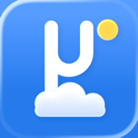

Privacy Policy
MicroSky, updated 23 November 2026
MicroSky does not care who you are or why you want the weather. It does not try to find out.
What MicroSky promises
- MicroSky has no accounts, ads or analytics. It sells nothing about anyone.
- It does not keep your name, email address or phone number.
- Your exact location never leaves your phone.
- To work, it may keep a few things that do not name you. These are a random ID for your phone, the notification token Apple gives your phone, and counts of how often things are used.
- It keeps these only while a setting that needs them is on. It deletes them when you turn the setting off, or when it has not heard from your phone for a long time.
- It keeps nothing that points straight to you or your phone. The one exception is when a law, a court or a company MicroSky depends on, such as Apple, requires more. Then it keeps only what is required, and says so here.
- The companies that carry a request, such as Cloudflare, see your internet address, as they do for any website.
What it keeps
MicroSky keeps only four kinds of things about you:
- What a setting you turned on needs. It keeps this only while the setting is on.
- A problem report, if you choose to send one. It is kept for 90 days. Nothing in it names you.
- A scrambled count of what your connection, or the app's day pass, asks of the server. It is kept for one day. This stops one person from using up what everyone shares. (See "Good to know," below.)
- With a subscription, a count of the devices your plan has rain watched for. It is kept while rain is watched. (See "What leaves your phone," below.)
The sections below say how each part works today. They can change as the app changes. The promises above change only with a new date at the top of this page.
Where you are stays on your phone
MicroSky divides the map into squares. Each square is about a kilometre across. (That is 0.01° of latitude and longitude.)
When the app asks a weather service about a place, it asks about the middle of the square the place is in. It never asks about the place itself. Your phone works out the square. Your exact position is never sent. Your widgets follow the same rule when they update on their own. They may ask where you are, and fetch the weather, even when MicroSky is closed. A widget keeps where it found you only while My Location is on.
The middle of a square is always less than 800 metres from anywhere in the square. The forecast models behind MicroSky use grids about 1 to 13 kilometres across. So asking about the middle almost always gives the same forecast you would get at your door.
Your exact position is still used, on your phone only, where a few hundred metres matter:
- Which weather stations are nearest, and how far away they are.
- The sun, the moon and the sky drawn behind the forecast.
- The Storm Prediction Center's severe storm outlook, in the lower 48 states. Your phone gets the same national outlook files as everyone. It works out which area your place is in. Nothing about the place is sent.
- How near a tropical storm is. Your phone and your watch ask the MicroSky server for every storm the National Hurricane Center advises on. Everyone gets the same list. They work out how far each storm is from your place. Nothing about the place is sent. Places far from the Atlantic and the eastern and central Pacific ask for nothing.
What leaves your phone
- For a forecast. This is when Use MicroSky's Server is on. It is on unless you turn it off.
- Your phone sends the MicroSky server the place's square and its time zone. The time zone lets each day start at the place's midnight.
- In or near Canada and Europe, your phone also sends your language. Those services then write their own text in your language, where they write in it.
- Your phone does not send the place's height. It sends nothing that identifies you or your phone.
- The server asks the free weather services about the square. It sends your phone each free service's forecast for the square, one beside the other, and merges the current conditions and alerts. It uses the same code as the app.
- Your phone blends those forecasts into one, with your own Open-Meteo key where you have one. Your own stations give the current conditions.
- For current conditions in or near the United States, Canada and Germany, your phone also asks the national weather service itself about the square. It picks among the service's stations using the place's height and your choices. The service is not sent the height.
- Your phone also asks a national service itself for the square's alerts when the server could not get them.
- The server keeps a square's answers. It also keeps the forecasts it sends, with the time zone and language it was asked in. It keeps them until nobody has asked about the square for two hours.
- The server keeps its lookups (which weather grid and stations the square falls in) until nobody has asked about the square for 14 days.
- None of these records say who asked. (What the server counts about your connection is under "Good to know.")
- When the server cannot send the merged forecast, your phone asks it for the services' own answers, with the middle of the square and its height. Or your phone asks each weather service itself.
- When Use MicroSky's Server is off, your phone asks each weather service itself, with the middle of the square and its height. It sends the MicroSky server nothing but a problem report you send and the requests that delete what the server kept.
- These need Use MicroSky's Server to be on:
- Air quality.
- Tropical storms' cones and tracks.
- The radar map's layers (but not Radar).
- Alerts in Europe outside Germany.
- The notices it sends while MicroSky is closed.
- The morning forecast.
- History.
- For rain by the minute, MicroSkyCast, with a subscription and while Use MicroSky's Server is on. MicroSkyCast is MicroSky's own rain forecast. MicroSky makes it from NOAA's public radar. It does not come from NOAA or from Apple.
- Your iPhone asks the MicroSky server about the square. Your watch shows what your iPhone read. The request names the square, about a kilometre across, and nothing else about the place. The server answers that it has nothing where its radar does not reach, which is everywhere outside the United States.
- The request carries Apple's signed record of your plan, and a signature from your phone's own key. They show that you subscribe. They do not say who you are. When your phone could not sign a read, the next read without a plan says why, once, in one of five fixed words, which names nothing about you.
- The server answers with words and a band: rain falling now, or likely within 15 or 30 minutes, and how hard. It does not send minutes or a time for the rain to start or stop, and the words are shown as sent, never counted down.
- The server keeps no record of who asked. It counts how many reads a connection or day pass makes, as it counts everything else (see "Good to know," below). It also notes which squares were asked about, in memory only, for the same 30 minutes, with nothing that says who asked.
- Too many devices must not read for one plan. So the server remembers, in memory only, a scrambled ID for the plan and for each device that read for it. It forgets a device 36 hours after its last read. It also remembers that a day pass's plan was checked. It keeps that until the day or the plan ends.
- To answer, the server asks the free forecast sources for the square's air temperature. Then it can hold rain back where it may be snow. It also holds the last 16 minutes of NOAA's radar for the area around the place (a square 2° across), in memory only. It holds it by area, not by person. It writes none of it to disk. It lets go of it 30 minutes after anyone last asked about the area, and when the server restarts.
- Nothing is sent to Apple, and no Apple weather service is asked.
- For a place's name and height. The middle of the place's square is what is sent. Sometimes Apple cannot name My Location. Sometimes Apple cannot give the time zone of My Location, or of a place saved without one. If Use MicroSky's Server is on, the square alone is then sent to the MicroSky server too. The server answers from a time zone map and a town list it holds. It asks no one else. It keeps nothing about who asked.
- For tropical storms, while Tropical Storms and Use MicroSky's Server are on. Nothing about the place or you is sent. Your phone and your watch ask the MicroSky server for its one list of storms, as everyone does. The server keeps nothing about the request.
- For tides, while the Tides card shows. The ID of the tide station nearest the middle of the place's square is sent. Your phone and your watch each find that station themselves from a list in the app.
- While Use MicroSky's Server is on, the ID is sent to the MicroSky server. The server asks NOAA for each station about once a month. It gives everyone at a station the same answer. It keeps nothing about who asked.
- Otherwise, or when the server cannot answer, the ID is sent to NOAA itself.
- For the radar, in the United States. Your phone asks the Iowa Environmental Mesonet at Iowa State University for map tiles. So does your watch, for its own Radar section.
- A tile is a piece of the map on screen. Each is a square tens of kilometres across at the card's zoom.
- Which tiles are asked for shows roughly where the map is, as it would on any map. No place, name or anything about you goes with them.
- The map under the radar is Apple's, under Apple's own privacy terms.
- Turn the Radar section off in Forecast Layout and no tiles are asked for, on either device.
- For warning areas on the radar, while Warning Areas and Use MicroSky's Server are on.
- Your phone and your watch ask the MicroSky server for its one list of the alerts in force across the United States. Everyone gets the same list.
- Then they ask for the outline of each forecast, county or marine zone on the map, by the zone's name. The name says as much about where the map is as a radar tile does.
- If you open an alert from the map, the National Weather Service is asked for it by the alert's ID alone.
- The server keeps nothing about these requests.
- For the radar map's danger layers, with Use MicroSky's Server on. Nothing about you is sent. Nothing about the place finer than a 10° square is sent.
- Your phone asks the MicroSky server for the list of layers it has. It does this whenever Layers or Forecast Layout is opened, or when a radar map draws a danger layer.
- While a radar map shows, your phone asks for one file for each layer you turned on. Everyone gets the same file. Your phone works out for itself what falls on the map.
- Active fires are asked for by the 10° squares the map shows. Each square is about 1,100 km across. Each is named by its corner.
- The server reads each source itself. Your phone never asks a source. The server keeps nothing about the request.
- The layers and their credits:
- Earthquakes: the U.S. Geological Survey.
- Fire perimeters: NIFC / Wildland Fire Interagency Geospatial Services (WFIGS).
- Smoke: the NOAA / NESDIS OSPO Hazard Mapping System.
- Active fires: NASA's Fire Information for Resource Management System (FIRMS). It is part of NASA's ESDIS, and the data is from its LANCE.
- Which layers you chose stays in MicroSky's settings on your iPhone.
- For the hourly chance of rain, with Use MicroSky's Server on. Nothing about you or your places is sent. Your phone asks the MicroSky server for the current model of the chance, which is a few numbers, the same for everyone. It asks at most once a day. The request says only which build family the app is, as one whole number. It carries no place and no identifier. Your phone works out for itself what the numbers do to the forecast. The server keeps nothing about who asked, except the day's count by build family and answer (see below).
- For alerts in Europe outside Germany, with Use MicroSky's Server on. The alerts come with the forecast.
- When the server cannot send the merged forecast, your phone asks it for the alerts. It sends the middle of the place's square alone. It sends nothing that identifies you or your phone.
- The server answers from the warnings it already read from MeteoAlarm. It keeps nothing about the request.
- MeteoAlarm is never sent anything about you or your places.
- For air quality, if you turn it on with Use MicroSky's Server. Your phone sends the middle of the place's square to the MicroSky server. It sends nothing that identifies you or your phone. It also sends the forecast's time zone and language. The server answers from the AirNow figures it already holds. It keeps nothing about the request.
- For past days, if you turn on History with Use MicroSky's Server, while Past Days shows.
- Your phone sends the place's square and its time zone to the MicroSky server. It sends nothing that identifies you or your phone.
- The server never keeps the square. It keeps the block the square is in. A block is 0.1° wide, about 10 km across.
- For each block it keeps the time zone there (from its own map), the day it began keeping the block, and the last day anyone asked about it. It never keeps the time.
- Once a day it keeps what the free weather services forecast for the middle of the block.
- Once a day it also keeps the hourly readings of the nearest public weather station within about 25 km. It asks that station's national service for them, by the station's ID.
- Everyone who asks about a block gets the same days.
- It keeps 30 days. It deletes a block, and all it kept for the block, 30 days after anyone last asked about it.
- If you turn on a setting under While MicroSky Is Closed.
- For each place you asked it to watch, the server keeps:
- The middle of the place's square, with its name and time zone.
- A random ID for your phone. It is not tied to you.
- Your phone's language and region (such as English, United States). This sets the words of its notices and how they write times.
- For a place whose alerts it watches: which national weather services they come from. Where they come from Environment Canada, DWD or MeteoAlarm's members, it also keeps your language, if it is one they write in. Then it can name their alerts in it, as the app does.
- Apple's push tokens, so it can reach your phone.
- A scrambled fingerprint of what your phone last sent. Then a daily check-in that changed nothing needs no work.
- When it last heard from your phone.
- Which notices it has already sent, so none comes twice.
- When it last started, updated or first heard of each rain Live Activity on your Lock Screen. This lets it end one it can no longer keep current, once the radar picture it was given is over an hour old. It forgets this when the Live Activity ends.
- Which rain Live Activities on the Lock Screen you closed. They stay closed for up to six hours.
- One word for each rain Live Activity on your Lock Screen. It says what the Live Activity last showed falling. MicroSkyCast speaks of rain only, so the word is rain. The word is the one the server sent, or the one your iPhone says. The Live Activity can then say so when it ends.
- With a subscription, the date your plan ends. It reads this from Apple's signed record of your plan. It uses the date to know how long to watch for rain. Nothing else about the purchase is kept.
- The server watches for rain as long as your phone checks in at least every 36 hours. Your phone does that when you open MicroSky or when iOS refreshes it.
- In the contiguous United States, the server reads NOAA's radar picture of the whole country every few minutes. It is the same for everyone. Nothing about you or the place goes with it.
- From that picture the server works out MicroSkyCast's words for each place it watches. It asks no one else for rain, and it does not ask Apple.
- Where radar cannot see, or the air is near freezing, it says nothing about rain there.
- The weather it fetches to watch a place is kept only as any square's answers are (see "For a forecast," above). Nothing about who asked is kept with it. So a watched square's alerts stay while it is watched, and for two hours after. The one other thing it keeps is the one word for each rain Live Activity, described above.
- So that one plan cannot be passed around to strangers, the server also counts how many devices each plan has rain watched for at a time. Up to 24 are allowed, so a family can share a plan.
- It counts with the plan's ID (or a test install's ID) and each device's ID. Both are scrambled. It counts in memory only.
- It forgets each device once rain is no longer watched for it. That happens when you turn rain off, or 36 hours after it last heard from your phone.
- It keeps these only while a setting is on. When you turn a setting off, it deletes what that setting sent.
- It deletes the rest when you turn the last setting off, except what the morning forecast still uses. It also deletes the rest after 30 days without hearing from your phone.
- Apart from any phone, the server keeps notes about each square it has checked. A note says whether the US National Weather Service, Environment Canada, Germany's DWD or, through MeteoAlarm, another European service issues alerts there.
- The notes mean the server works out coverage once, not for every phone.
- The server watches each place as it told your phone, never by these notes.
- It deletes each note 30 days after it last checked, at the next hourly tidy.
- For each place you asked it to watch, the server keeps:
- If Keep Widgets Up to Date is on. It is on unless you turn it off, and it needs Use MicroSky's Server and a widget on your Home Screen, Lock Screen or StandBy.
- The server keeps a random ID for your phone that is not tied to you. It also keeps Apple's push token, so it can reach your phone, and your phone's language and region.
- It keeps one mark that says you asked, a scrambled fingerprint of what your phone last sent, and when it last heard from it. It keeps no place.
- Every half hour it sends your phone a notification with nothing in it but a mark that says it is a wake. It sends none to a phone it has not heard from in 36 hours. That wakes MicroSky to refresh its weather and widgets. iOS decides whether to wake it.
- Turning it off, or removing the last widget, deletes the mark at the next check-in. The rest is kept only while a setting under While MicroSky Is Closed or the morning forecast uses it. The server deletes it all after 30 days without hearing from your phone.
- If you turn on the morning forecast.
- The server keeps the place it is for, as the middle of the place's square, with its name and time zone and the time you picked.
- It keeps a random ID for your phone that is not tied to you, and your phone's language and region.
- It keeps Apple's push token, so it can reach your phone.
- It keeps a scrambled fingerprint of what your phone last sent, and which mornings it has sent, so none comes twice.
- As for everything it is asked, it keeps only a scrambled count for a day. It counts the new devices and notification addresses your connection, or the app's day pass, sends. (See "Good to know," below.)
- It fetches no weather for this. At that time it sends your phone a notification. Your phone refreshes the place from the same sources the app uses, and writes the notice itself.
- Turning it off deletes the time and which mornings it sent, at once. The rest is kept only while the morning forecast or a setting under While MicroSky Is Closed is on. It is deleted when you turn the last of them off, or after 30 days without hearing from your phone.
- To show it is really MicroSky, while Use MicroSky's Server is on.
- Once a day your phone, and your watch for itself, gets a day pass from the server. The server counts requests that carry the pass as the app's, not by your connection.
- The first time, Apple's App Attest vouches that a key your phone made belongs to MicroSky on a real device. After that, the key signs a random challenge.
- With a subscription, the key also signs Apple's record of your plan each time your phone sends it. This lets the server tell that the record came from your phone.
- The server checks the signature. It counts, in memory for the day, how many records the key signed. That way one phone cannot sign for many.
- The server keeps the key's ID and public key, how many times it has signed, and the day it last did. It never keeps the time.
- When you turn Use MicroSky's Server off, your phone and your watch ask the server to delete these. They ask again until the server answers. The server also deletes any key unused for 60 days.
- The pass never carries the key. It carries a code for the day it was given. The code is the same in each pass one phone gets that day, so they are counted as one. It is counted as a scrambled number kept for a day.
- The code is made with a random secret. The server holds the secret only in memory, and drops it when the day ends. After that, no one can tell whose code it was, and no one can link one day's passes to another's. That includes the server.
- The server never records which phone a pass went to. So it says nothing about who you are.
- If you answer "Did it rain here?" MicroSky asks this only after a rain notice, and sends something only when you tap an answer. If you don't answer, nothing is sent. After 3 hours the question is dropped.
- Your phone sends your answer: yes, no, or snow or sleet.
- It sends the hour of the notice, and the area you were in. The area is about 11 km (7 miles) wide. It sends what the notice said, such as "rain within 15 minutes".
- It sends nothing else. There is no ID, push token, name, place, language or exact time. It shows the day pass it shows for every request.
- The server adds your answer to a count for that area and hour, and forgets the rest. It does not keep the answer by itself, and it does not keep who sent it.
- It keeps the counts for 14 days, by area and hour. Then it adds each day up for a block about 111 km (69 miles) wide, and keeps those for 400 days.
- The server sends the notices, so it could in theory match an answer to the phone it notified. It does not. The code that takes answers never opens the list of phones, and a test checks that.
- One phone's pass can answer once for an area's hour, and 10 times a day. The server counts this in memory, and forgets it when the day ends.
- Turning off Ask If It Rained in Settings removes the question and deletes any answer still waiting on your phone.
- If you report a problem. This is what is sent:
- What you write.
- The app's version, your phone's system version and kind (such as "iPhone17,1"), its language, which settings and sections are on, and which weather sources failed. All of this is listed in the form before you send it.
- A screenshot, only if you choose one. It is redrawn, so nothing stored with the picture goes too.
- The place's 1 km square, only if you tick it. The place's time zone goes with it.
- The weather shown for the place, only if you tick that. It goes as far as your Forecast Layout shows it, in fixed units, with the place's time zone:
- The reading now, with each value's source and how old it is.
- This hour and the next 23: temperature, feels-like temperature, chance of precipitation, and conditions.
- Today and the next 9 days: high and low, chance of precipitation, and conditions.
- What Current Details shows besides the reading. This is the day's UV peak or forecast total where the reading has none, the next sunrise or sunset, and the lightning strikes and distance a station heard. The sunrise or sunset is worked out from the middle of the place's 1 km square. It is sent only to the minute, so it says no more of where the place is than the square does.
- A source is named only by its kind, such as "personal station". It is never named by a station's name or number. No place goes with it.
- A personal station's readings go only if you tick the square too. Its exact readings could be matched against public maps of stations to find where it stands.
- Nothing that names you or your phone goes with the report. The server keeps the time it arrived only to the hour, so no reply can be sent. Reports are deleted after 90 days.
MicroSky keeps no logs of requests, and nothing about who asked. It has no accounts, analytics about you, or advertising.
The server does count its own work, for its owner alone. It counts how many requests each route answered in a day, how many failed and how long they took. It also measures its own memory and speed. These counts hold no address, ID or place, and no request is recorded with its time. Counts of requests by route are kept 400 days, except routes that register a device, make a key or pass, or send a report, which are kept 90. Counts of callers and devices are kept 90 days, since while few people use the app they could describe one person's use. Calls to each weather source are kept 60 days. Memory and speed are measured every 5 minutes and kept 7 days, then kept as hours for 90 days and as days for 400. The server also checks its own rain statements against the rain gauges at public airports. It holds those statements for about a week, until the gauges are in. Then it keeps only how many were right, by day, region and kind of statement, for 400 days. No one's place or request feeds this. The server also checks the hourly forecast at those airports. It holds the forecast values for public airports for 3 days, until the reports are in. Then it keeps only counts by source and lead group for 400 days. These are public forecasts and the airports' own reports. Nothing about a person, a phone or a place anyone asked about goes into them. The separate table of public weather data, described below, is kept apart from these values.
MicroSky keeps no personal data except what is listed above. Separately, MicroSky's server keeps a table of public weather data to improve its forecasts. It holds what NOAA's and ECMWF's open weather models predicted near about a hundred public airports, what the National Weather Service forecast for those airports, and what those airports reported. To fetch them the server contacts the public data servers of NOAA, ECMWF, the National Weather Service, the Iowa Environmental Mesonet and Google Cloud Storage. They see only the server's own address and the name MicroSky gives itself. That table is not the forecast values held for 3 days above. It holds public forecasts and reports, and nothing about you, your phone or your places. The table has no set end date. The NOAA files the job downloads to fill it are deleted after 1 day.
Good to know
- Cloudflare. Requests to the MicroSky server pass through Cloudflare. Cloudflare sees your internet address as part of delivering them, like any website does.
- If one internet address sends more than 200 requests in 10 seconds, Cloudflare turns the rest away for 10 seconds.
- Its security log shows each request it turned away, with the address and what was asked. It keeps that log for as long as Cloudflare keeps it. Only MicroSky's developer can open it. MicroSky copies nothing from it.
- Counts that stop abuse. So that no one can use up what everyone shares, the MicroSky server counts some things for each UTC day.
- It counts every request each internet address sends.
- It counts how much that address has it fetch, merge and send of forecasts.
- It counts how many places it looks up to watch, and how many History areas its asks start or keep.
- It counts how many devices, notification addresses and reports it sends.
- About ten busy phones' worth of each is allowed. All the addresses on one network that have no day pass share ten times that.
- It holds the address, and its network, only scrambled. It scrambles them with a random key it makes in memory each time it starts, and never writes down. The address is held beside the counts alone, never beside what was asked. It forgets them within a minute of the day ending.
- Tropical storms, the map's layers, the hourly model, tides, air quality and place names are counted the same way.
- A phone or watch with a day pass is counted by the tag the pass carries instead. It is counted the same way, and never by the key. Every pass asking from one connection together has at most ten allowances.
- Problem reports, and asking for a pass, are always counted by the address.
- Nothing of this is logged or stored except the day's totals. They name no one, and are kept 90 days. The bytes sent are kept 400, and the calls to each source 60. They are:
- How many callers there were with a pass and without, what they used, the most one used, and how many ran out.
- The share given to callers without a pass, and any change to it.
- How many keys were made or deleted, passes renewed, subscription records signed, devices asked to attest again, and attestations not accepted.
- Whether unsigned records count, and any change to it.
- The requests refused for want of a pass, where nothing else counts them.
- How many times the hourly model was asked for, by build family and by the answer: a model, part of one, or the plain forecast. It also counts answers cut short because a model file failed its checks. It names no person, device or place.
- How many times MicroSkyCast answered with each status, in one number for the day with no person, device or place. A refusal for want of a plan is counted as no plan sent, or as a plan sent and not accepted. For no plan sent, it also counts why your app had none to send, where it said. The reasons are no record of a plan, no key, no challenge from the server, a key that would not sign, or signing left for later. For a plan not accepted, it also counts why, for example a bad signature, a lapsed plan, or an install that is not a test install. Each reason is one of a few fixed words, with nothing that says who sent the read. A refusal for the day's limit is counted for one caller's limit or for everyone's. A good answer is counted as rain, dry, unknown or unavailable, or as unavailable because the setting is off or because one plan was read on too many devices.
- The History areas refused because every one was in use.
- The bytes sent.
- The calls it made to the NWS and Bright Sky, and through its IPv4 way out. These are kept 60 days.
- How many keys are held, and how many devices are registered, in all and for each notice.
- Warnings are checked for the middle of the square. A warning drawn to end between the middle and your exact position could be missed for a few hundred metres at its edge. Warning areas are drawn to about a kilometre themselves. Checking the whole square is planned.
- Your own stations and keys. You can connect a weather station or add your own Open-Meteo key. The token or keys you enter are kept in your Keychain. iCloud Keychain shares your Keychain with your other Apple devices, if you use it. The token or keys are sent only to that service: Tempest, Davis WeatherLink, Ambient Weather, Ecowitt, Weather Underground or Open-Meteo.
- When something goes wrong. Your phone and your watch write a short note in the diagnostic log the system keeps on the device. An example is a request that gets no answer, or a file that can't be saved.
- A note says what failed and the name of the service asked. It never says where you are. It never has a place's name, an ID, a token, an account or a key.
- Your phone also notes why the rain Live Activity started, ended or stayed off, such as that Live Activities aren't allowed. It notes the reason alone.
- MicroSky never sends the log anywhere.
- Celebrations. The holidays you choose in Celebrations stay in MicroSky's settings on your iPhone. They go from your iPhone straight to your Apple Watch, so its sky shows the same. They are never sent anywhere else. They are never guessed from where you are. Every one is off until you choose it.
- Your Apple Watch. Your iPhone sends your Apple Watch your places.
- It sends the places you saved, as you chose them.
- It sends My Location as the middle of its 1 km square, with its height. It never sends the exact position.
- Your iPhone and your watch tell each other today's high and low at each place, with the middle of the square each one read it for. Your iPhone also sends its current conditions there.
- Each one keeps only the latest the other sent. It is kept on the device until the next one replaces it, or you remove the place. Neither sends it anywhere else.
- MET Norway and Environment Canada. The server cannot reach them directly. It reaches them through Cloudflare. Cloudflare passes on the same square and nothing more. It keeps nothing.
What comes next
- Done: the 1 km square. Every request leaves your phone naming only the place's square. It names the middle of the square. For the server's merged forecast, it names the south-west corner.
- Done: air quality from the server. The server reads the air quality for the United States from AirNow. It answers for your square, so your phone makes one small request.
- Done: forecasts from the server, worldwide. Your phone asks once for each place, not several times. This saves battery and data. Your phone still asks the services itself whenever the server cannot answer.
- Done: the free forecasts for each square. The server fetches the free sources once for everyone in a square and sends each one's forecast, and your phone blends them with the app's own code. Your phone no longer sends a place's height to get it.
Analytics
MicroSky contains no analytics or crash-reporting code. You can choose to share analytics with app developers in your device's settings. If you do, Apple gives the developer counts, such as downloads and crashes. These do not identify you.
Children
MicroSky is fine for all ages. It collects nothing that identifies anyone, children included.
Changes
If this policy changes, the new version will be posted here with its date.
Contact
You can ask questions about privacy on MicroSky's support page.